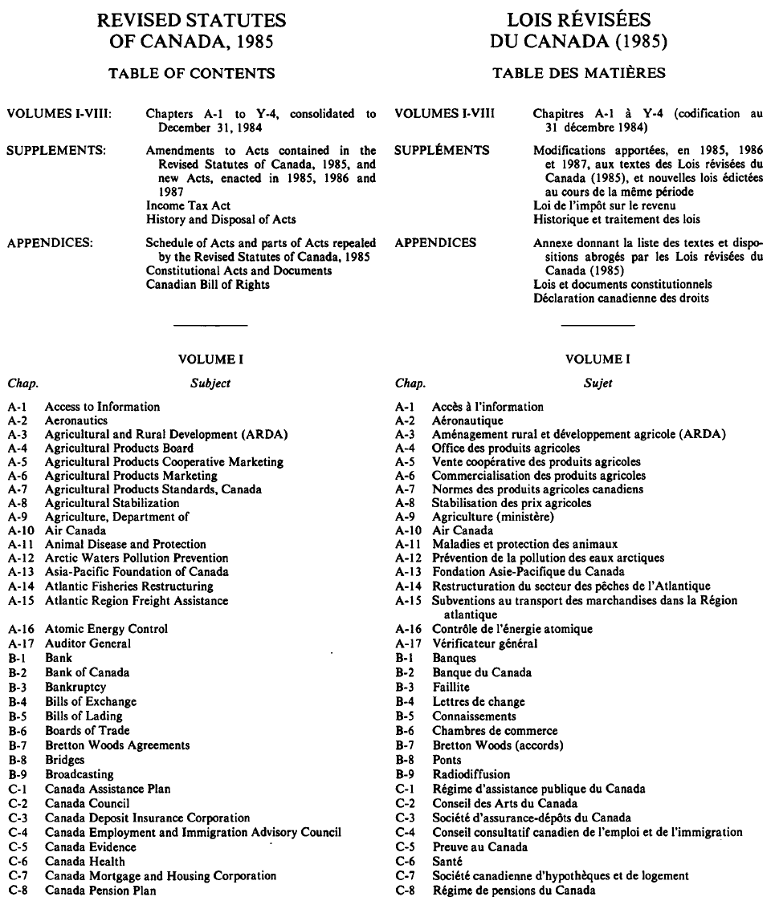
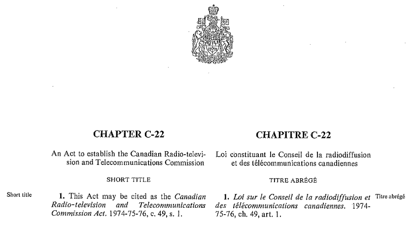
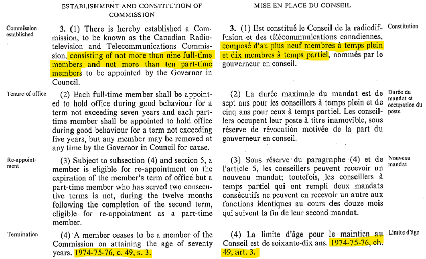
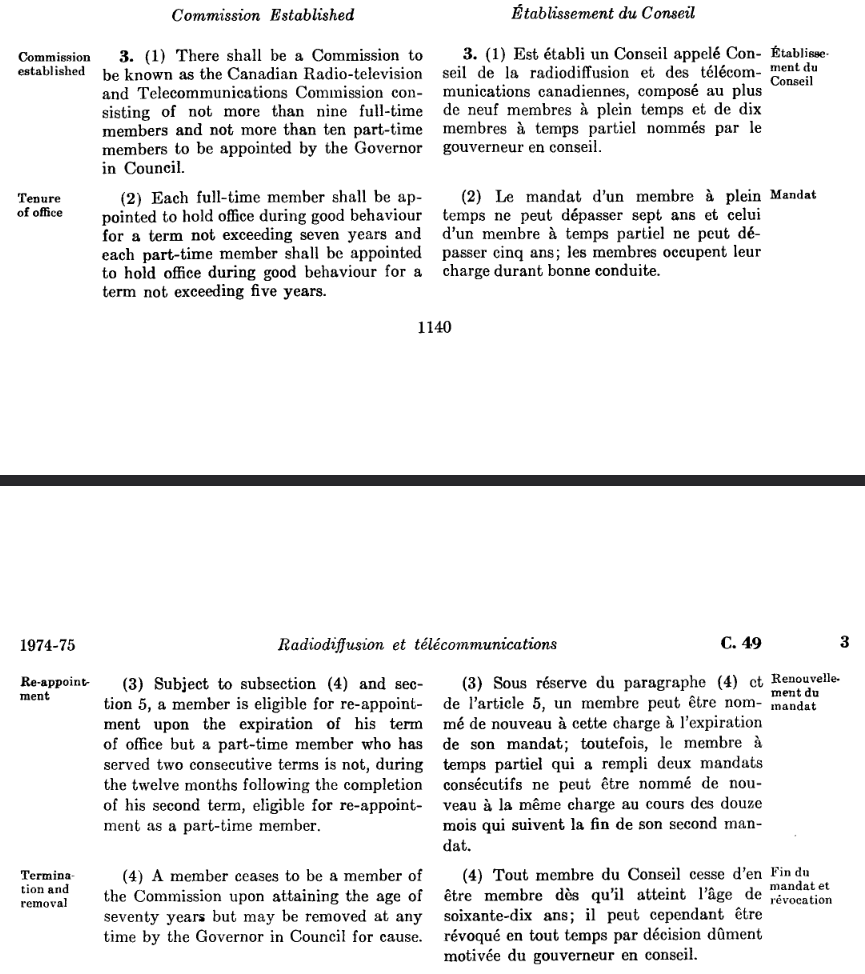
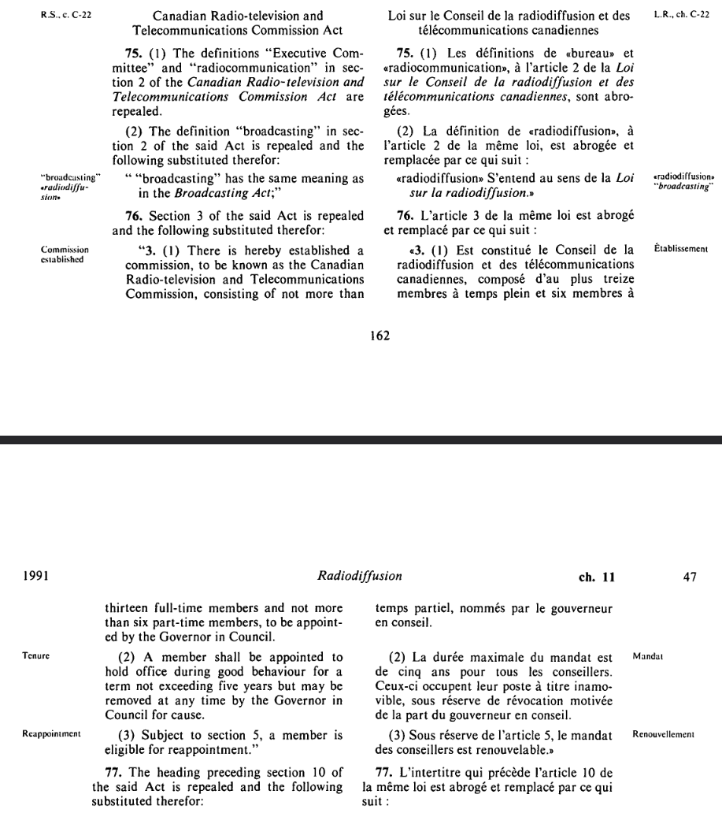
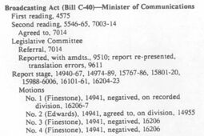

Statutory research series
Welcome to this short series on statutory research. I want to help you research statutory evolution and legislative history of Canadian statutory law. This will allow you to understand the content of an Act at any point in time and to find out what legislators said about bills prior to their passage into law.
By the end of this series, you should be able to do the following.
- Identify the statutory sources of an Act and any amendments that have occured to an Act throughout its history. That means finding the statutes and bills from which the Act and any amendments to it arose.
- Find the legislative debates associated with those bills.
- Determine when the Act (or an amendment to it) came into force.
This page will be a work-in-progress that I think will eventually expand to four small modules. I will update this page as I complete the material for each.
What this series omits, but I want you to be aware of, are methods of research into Indigenous laws and legal traditions. I have no practical experience with those methods of research. In the series developed on this page, you will see that even researching what Canada has written down about its legislated law can be complicated. It is all that more complex to research Indigenous law that may or may not be in written form and that is in various stages of revitalization, depending on the particular Indigenous nation. To learn more about this, I recommend reading about the work of the Indigenous Law Research Unit at the University of Victoria; a special issue of the McGill Law Journal on Indigenous law, legal orders, and traditions; and a collection of essays edited by Michael Asch, John Borrows, and James Tully, Resurgence and Reconciliation: Indigenous–Settler Relations and Earth Teachings.
I also want to emphasize, especially for anyone coming to this series who is not in law school, that this is not how to figure out what The Law is. It is only how to research one kind of material that contributes to the development of Canadian law. Law is made in many ways, in many sites, with various materials and through relationships and human commitments to meanings. What the legislature has chosen to declare through statute is only one part of how we create legal meaning together.
Finally, before embarking on any of the research I describe in this series, always check whether somebody else has done some of the work for you. There may be a journal article, a court decision, or even a Wikipedia article that outlines the rough statutory history of an Act. But even if you use someone else’s work as a starting point, you will often want to check their work for yourself: did they get every date exactly right? did they miss any amendments? So whether you have to start from scratch or if you are starting from someone else’s work, you’ll need to understand what I present in this series.
Part 1: The materials
This first Part covers the materials you will encounter during this type of research. These materials are: bills, statutes, Acts including amending Acts, Revised Statutes, official consolidations, unofficial consolidations, and Hansard records. I will present these all in this first Part. Another important source is the Canada Gazette (and the provincial equivalents), but I will leave discussion of the Gazettes until the final Part in this series.
Here are some rough descriptions of these materials I just mentioned.
A bill: the piece of legislation that is developed in Parliament (or a provincial legislature). A bill is what the Parliament drafts, debates, amends, and passes. A bill passed by Parliament becomes an Act upon Royal Assent.
In Parliament, bills are labelled starting with a C- if they originate in the House of Commons and they are labelled starting with an S- if they originate in the Senate. Numbering starts over at the beginning of each legislative session. Some Acts that gained notoriety prior to their passage are often known by their bill number for quite some time because this is how the media and commentators would have been referring to them.
For example, in 2021, there was a Bill C–10 (“An Act to amend the Broadcasting Act and to make consequential amendments to other Acts”). Look at some of the headlines: “Heritage Minister asks senators to focus on passing Bill C-10,” “Feds admit Bill C-10 faces opposition across the country.” These are ambiguous without context, because there is a Bill C-10 in every session of Parliament. See e.g. Bill C–10 from the 43rd Parliament, 1st Session, and Bill C–10 from the 42nd Parliament, 1st Session.
Hansard. Hansard refers to the record of what the legislature did with and said about a bill during its progress through Parliament.
A statute. A statute is the written text of the Act as ultimately enacted by Parliament. These are published in annual volumes entitled Statutes of Canada (or more simply, Annual Statutes).
An Act has a dual-meaning. It can refer to the enacted Bill (the thing that receives Royal Assent and which is published as a statute in the annual volume). It also refers to the evolving, abstract object that gets amended over time. For example, the Assisted Human Reproduction Act is the title of a statute that was passed in 2004. It has been amended since then and the name Assisted Human Reproduction Act continues to refer to the current and changing content of that Act.
Revised Statutes. Several times in Canada’s history (1886, 1906, 1927, 1952, 1970, 1985), Parliament has passed what are called Revised Statutes. These are when Parliament brings together all amendments that have occurred to all the existing Acts over time and enacts an updated version of each of those Acts. These updated versions incorporate directly into their text the most up-to-date amended language. They are not intended to be new law. They are only meant to consolidate and declare anew “the law as contained in the Acts... for which the Revised Statutes are substituted.” The Revised Statutes have hundreds of chapters, one for each Act that was in force at the time.

In between the publication of Revised Statutes, you have to put together the content of an Act by looking at all amendments that have happened to an Act since its original passage or since the most recent Revised Statute. But consolidated acts can help you with this.
Unofficial consolidations, from providers like WestLaw, CanLii, or Canada’s Justice Laws website (prior to 2009) attempt to present what the content of an Act is right now or at any point in time (going back only so far, though). See e.g. CanLii’s unofficial consolidation(s) of the Vancouver Charter from 2008 until now. These are generally helpful only for recent decades. E.g. You won’t find good unofficial consolidations for Acts as they existed in 1925.
Official consolidations (e.g. Canada’s Justice Laws website since 2009) provide authoritative evidence of the content of an Act is right now or at at any point in time (again, only going back so far).
The decision to produce official revisions and/or consolidations and the process for doing so differs between federal Parliament and provincial legislatures and the practices have changed over time. In this series, I will be focusing on the approach take by the federal Parliament and the BC legislature. If you’re doing work in another province, these general principles should help you understand the approach taken by your province, but you’ll need to take some time to understand the particular system(s) used in your jurisdiction.
An example: the Copyright Act
For the rest of this Part, I will present a federal Act, the Copyright Act, and point out how all the materials I just presented contribute to the product that we see today.
Today, an official consolidation
First, to see the Copyright Act as it exists today, we can rely on the official consolidation provided by Canada’s Justice Laws website. Here are direct links to the full, up-to-date content of the Act as officially consolidated: HTML; PDF. It incorporates the effects of all amendments that are in force.
Original
While it is debatable what the “original” Copyright Act was, a version with the structure that has lasted until today was passed in 1921. It was published in the annual volume 11–12 George V in 1921, and you can read it here.
1985 official revised version
The Copyright Act was around during Canada’s most recent Revised Statute project (1985), so it was included as a chapter there (chapter C-42). You can read that chapter here.
A 2012 amendment
The Copyright Act has been amended many times between 1985 and today, including in 2012 when Parliament made many changes to the fair dealing user rights. The 2012 amending Act can be found in the Annual Statutes of Canada 2012, Chapter 20. Here is its full text (HTML; PDF). It was entitled the Copyright Modernization Act and went through Parliament being known as Bill C-11. You can follow the life of Bill C–11 on LegisInfo, including links to committee hearings and Hansard records.
Copyright Act summary
I showed you a very early version published in 1921. I skipped over many amendments but showed you that the 1985 Revised Statutes included the Copyright Act at Chapter C-42. And I showed you an amending Act: developed as Bill C-11, published as a statute in the Annual Statutes of 2012, the effects of which are now part of the current official consolidation on the Justice Laws website.
Concluding Part 1
In this Part, I have only introduced you to the materials involved in statutory research and by example showed you some of the ways of accessing them. You should know what a bill is; what a statute is; the dual-meaning of the word Act and that Acts can evolve over time; that governments may create official consolidations of Acts and that the Parliament very occasionally creates Revised Statutes.
In my examples, I have mostly shown you the simplest, modern modes of accessing these materials (e.g. the official consolidation; Parliament’s LegisInfo portal which links together bills and Hansard in a helpful way). Once you go back a bit further in time, it becomes more complicated to identify the evolution of an Act over time and to identify the associated statutes, bills, and Hansard records.
That is what I will share with you in the following Parts: how to actually find these materials and various methods of research that are effective across different eras.
Part 2: Federal statutory evolution
In this Part, I will show you how to use specific online resources to discover the statutory material that has contributed to a federal Act.
This will involve the following resources:
- Today’s consolidated Acts at the Justice Laws website.
- Annual Statutes available online from 2001 onwards.
- Annual Statutes from before 2001 are unfortunately more difficult to access. If you are a student with access to your university’s online databases, you likely have access to HeinOnline and a database titled “Annual Statutes.” Here is the direct link for those at UBC. If you do not have online access, most universities also have the print volumes available.
- Revised Statutes of Canada, 1985, and its supplements can be found in PDF form here, on the Government of Canada’s publication site.
- Revised statutes from before 1985 are more difficult to access. All revised statutes (1886, 1906, 1927, 1952, 1970, 1985) are available through HeinOnline, in a database titled “Revised Statutes of Canada.” Here is the direct link if you’re at UBC. Most university libraries will also have print volumes of these.
To show you how to use these, I will work through an example. Let’s trace the size of the Canadian Radio-television and Telecommunications Commission (CRTC) throughout its history.
Section 3(1) of today’s official consolidation of the CRTC Act says the following:
There is established a commission, to be known as the Canadian Radio-television and Telecommunications Commission, consisting of not more than 13 members, to be appointed by the Governor in Council.
Today, the CRTC can have at most thirteen members.
To trace this Section back through time, look to the revision annotation at the end of the Section. I’ll reproduce the revision annotation here, but it is part of both the PDF and HTML views of the consolidated statute today:
R.S., 1985, c. C-22, s. 3; 1991, c. 11, s. 76; 2010, c. 12, s. 1701.
This annotation tells us that Section 3 was amended in 2010 and 1991. It also tells us that Section 3 was most recently enacted in full in the Revised Statutes of Canada, 1985. This does not mean that this Section ultimately originated in 1985. The Revised Statutes of Canada will provided a further revision annotation if there is history prior to 1985. But for now, we know that we need to examine at least the following sources:
- SC 2010, c 12, s 1701 (Annual Statutes of Canada 2010, Chapter 12, Section 1701);
- SC 1991, c 11, s 76 (Annual Statutes of Canada 1991, Chapter 11, Section 76);
- RSC 1985, c C-22, s 3 (Revised Statutes of Canada 1985, Chapter C-22, Section 3).
Before we dive into what the CRTC Act looked like after each of those revisions/amendments, let’s keep tracing the history backward from 1985. For this, we need to go to the Revised Statutes of Canada, 1985, Chapter C-22, Section 3. Find it from the Government of Canada here or through UBC’s HeinOnline database here.
RSC 1985 is huge: seven volumes and several supplements. I always go to the index first to figure out in which volume I’ll find the chapter that I want. It says Chapter C-22 is in Volume II. There, you’ll find the CRTC Act as it was “revised” in 1985.


Here, we find that Section 3 does in fact point back further in time, to a citation that looks a little strange: 1974-75-76, c. 49, s. 3. Before 1983, a volume of the Statutes of Canada would sometimes span several years when a session of Parliament spanned several years. That seems to no longer be the practice. In any case, since this is before 2001, there is no easily accessible, online source for this volume. I access it through HeinOnline. Again, the direct link for those at UBC is here.

There is no revision annotation at the end of Section 3, so this is where our tracing ends.
A point of caution: while this is all correct regarding the Canadian Radio-television and Telecommunications Commission under the Canadian Radio-television and Telecommunications Commission Act, there was a predecessor commission named the Canadian Radio and Television Commission created by the Broadcasting Act in 1968. This would have become apparent through researching secondary sources and Hansard. If I were doing this research for real, I would want to understand what that previous commission looked like and whether Parliament intended the new CRTC to be like the old CRTC.
To summarize, the entire history of Section 3 of the CRTC Act is captured by:
- SC 1974-75-76, c 49, s 3;
- RSC 1985, c C-22, s 3;
- SC 1991, c 11, s 76;
- SC 2010, c 12, s 1701.
When did the Commission change size? Upon initial creation and in 1985, the Commission was made up of up to nine full-time members and ten part-time members. Today, it is made up of no more than thirteen members. Did that change happen in 1991? Or did it happen in 2010? To discover this, we need to look at the Statutes of Canada in 1991 and 2010.
For the 1991 amendment, I need to rely on HeinOnline again (the direct link for UBC people). Statutes of Canada 1991, Chapter 11 was in fact a new Broadcasting Act with the structure that we see today. It also included “related and consequential amendments” to related Acts, including an amendment to the size of the CRTC.

Section 76 changes the composition of the CRTC. This amendment changes four of the part-time positions into full-time positions. After this amendment, the CRTC consists of “not more than thirteen full-time members and not more than six part-time members.”
For the 2010 amendment, we can use the Annual Statutes published on the Justice Laws website. Chapter 12 (the Jobs and Economic Growth Act) is a monster Act. It has over two-thousand individual sections. But we are only interested in Section 1701. There, we see that the CRTC Act was amended to read as it does today: “not more than 13 members” and no mention of part-time members. Section 1702 amends Section 4 of the CRTC Act to say that all members are full-time members: “A member shall devote the whole of his or her time to the performance of his or her duties under this Act.”
Enactment does not imply in force
So far, I have only shown you how to find the statutory material that has contributed to the content of the Act. What I haven’t shown you, and what I am postponing until a later Part, is how to determine when these amendments actually come into force. The CRTC didn’t suddenly lose its part-time members when the Jobs and Economic Growth Act received Royal Assent.
Concluding Part 2
In this Part, through example, I showed you how to trace the content of a federal Act back through time by following the revision annotations found at the end of any Section. This allows you to find the statutory material that has contributed to an Act. Here are the important things you should understand now.
A revised statute (as was done in 1985) is a fresh starting point for any Act. Revised statutes are massive, and you should start with the table of contents or index.
In the past, “annual” statutes sometimes spanned several years.
An Act can have multiple purposes. The 1991 Broadcasting Act, for instance, created the substantive structure and content of today’s Broadcasting Act and also made amendments to related Acts.
Unless you supplement your statutory research with secondary sources and Hansard, you may miss large parts of the picture: e.g. the CRTC that existed before today’s CRTC.
Part 3: Federal legislative history
In this Part I will show you how to find the legislative history of these amendments. What did members or Senators say about why they were changing the size of the CRTC? What was presented in committee? Were there any amendments to the bill as it worked its way through Parliament? Hansard and related records can help answer these questions. I’ll show you how to do this work with a historic bill and then with a modern bill, as the resources available to do this research change over time.
- Research into the legislative history of modern bills—from the 37th Parliament (2001) onward—is made fairly straightforward through the LEGISinfo site. For modern bills from 2001 onward, the entire legislative history is organized on LEGISinfo with convenient links to the relevant Hansard and committee records.
- From 1994–2000, LEGISinfo provides much less information about each bill and doesn’t link to the relevant Hansard and committee records. Nonetheless, through a mix of LEGISinfo and the separate Hansard and committee-record sites, material from 1994–2000 is still pretty well retrievable directly from Parliament: House Hansard, House committees, Senate Hansard, Senate committees. It just takes a little more exploring on your part.
- For bills from before 1994, you will have to use the Canadian Parliamentary Historical Resources, with bills, Hansard, and committee records going as far back as the first Parliament. These require a lot of manual searching through large PDFs.
The general steps are the same across all era, but the particular resources that you’ll use change.
Steps:
- Identify the bill that led to the statute.
- Use Hansard to locate the Bill’s readings, referral to committee, committee records, and report(s).
Historic (pre-1994) bills
Let’s first do this the hard way. What did Parliament have to say about the 1991 change?
In this case, the table of contents of the Statutes of Canada 1991 tells us that Chapter 11 went through Parliament as Bill C-40. It received Royal Assent on February 1, 1991. This information will help us to locate information about the Bill in Hansard.
Use the Canadian Parliamentary Historical Records to browse to the House of Commons Debates for the time period associated with that particular Bill C-40. That would be the 34th Parliament, 2nd Session (spanning April 3, 1989 to May 12, 1991). Then, go to the index of those debates to gather the list of pages that you’ll need to look at. Here is page 94 of the index, where it lists Broadcasting Act (Bill C-40) along with the pages for its first reading, second reading, referral to committee, report stage and associated motions, third reading, notification of Senate passage, and Royal Assent.

I would first jump to pages 5546–65 and 7003–14. Second reading is the main debate over the general purpose of a bill. The bill’s sponsor will present the motivations, people will speak for and against the general thrust and implications of the bill. Clause-by-clause criticism isn’t a main focus at this stage, but it is still a very important stage of a bill’s journey through Parliament.
The House debates for this session are split across fourteen volumes. You can poke around by trial-and-error to determine which of the volumes contains the pages of interest, or you can look to the index, which reports the pages contained in each volume. Once you’ve located the appropriate volume, you can use the web viewer to browse page-by-page or use the search function. You can also download the full PDF if you prefer to use your own PDF software.
At Second Reading, I did not find anything directly discussing change in composition of the CRTC, but at page 5564, Jim Edwards (Parliamentary Secretary to Minister of Communications) says that the bill “strengthens the ability of the [CRTC] to regulate and supervise the broadcasting system” and that it will make “the CRTC more efficient, more responsive to Canadians.”
To see whether the change in composition was considered in committee, we need to determine which committee this bill was referred to. At page 7014 of the House Hansard, it merely tells us that the House agreed to the motion to read the bill a second time and to refer it to “a legislative committee” (rather than naming a standing committee). This suggests that there was a committee created specifically to consider this one bill. You can browse the committee records and locate the records from the Legislative Commitee on Bill C–40.
This is a massive volume, including evidence submitted to the committee by interested parties across Canada, debates among committee members, line-by-line consideration of the bill, etc. I used the search function to search for the term “full-time” (in quotes).
- On January 2, 1990, the Alliance of Canadian Cinema, Television and Radio Artists presented to the committee a report that said “the increase in the number of full-time commissioners [… should] assist the CRTC to make efficient decisions.”
- On February 14, 1990, David C. Coville (Senior Director, Department of Transportation and Communications, Province of Nova Scotia) said, “we wish to reiterate our support for the provisions in the legislation allowing for the appointment of full-time commissioners who would reside in the regions they represent, increasing the number of full-time commissioners from 9 to 13 … the cumulative effect of these provisions will be a more efficient, effective, and regionally sensitive commission.”
I would go further if I were doing this research for real, but that is the kind of information you can find out of the committee reports. These statements don’t necessarily reflect legislative intent, but do reveal context that was available to Parliament. The clause that changed the composition of the CRTC was not amended by the committee nor discussed at the report stage. I would complete this research by repeating all of the above for the Senate records.
Modern (post-1994) bills
This only gets easier as you move towards the present-day. Instead of searching through text extracted from PDF scans, you get to seach directly in the raw text of the materials, and the Parliament websites organize and link the material together in a much more helpful way.
On my next update of this post, I will present a short example of how to do this research on a modern bill. That will complete this Part on federal legislative history.
Notes
1. ↑ By statutory evolution, I mean the evolution of an Act over time. Others call this legislative evolution (see Susan Barker & Erica Anderson, “Cinderella at the Ball: Legislative Intent in Canadian Courts” (2015) 38:2 Can Parl Rev 15, citing Ruth Sullivan, Sullivan on the Construction of Statutes, 5th ed (Markham, ON: LexisNexis, 2008) at 577). By legislative history, I mean the record of the legislative process that leads to an enacted statute. Beware that other sources, including Canada’s Supreme Court do not use these terms consistently. See e.g. Agraira v. Canada (Public Safety and Emergency Preparedness), 2013 SCC 36 (using the term “legislative history” to refer to how a section of an act was amended over decades at para 66ff); R v Safarzadeh-Markhali, 2016 SCC 14 (stating that they had “little evidence of the legislative evolution of the challenged provision” at para 36). See also Gary L Redhead Holdings Ltd v Swift Current (Rural Municipality), 2017 SKCA 47 (discussing the inconsistent usage of the terms and a defence of distinguishing between the two at paras 53–55). And for the meaning of Act and statute, read on!
2. ↑ Going forward, I will not distinguish between Parliament and provincial legislatures unless significant.
3. ↑ A bill is often originally drafted by the executive branch of government for introduction to Parliament.
4. ↑ This series will not focus on the full internal process of what happens in Parliament, but here is a good discussion between Professor Craig Forcese and Professor John Mark Keyes on the legislative process. See also House of Commons Procedure and Practice, 3rd ed (2017), Chapter 16: “The Legislative Process.”
5. ↑ Named after the first official publisher of Parliamentary debates in the British Parliament.
6. ↑ Provinces have an equivalent.
7. ↑ An explanatory note included in the Revised Statutes of Canada, 1985, gives some helpful background to the process. No revision process or output is identical. The Statute Revision Commission has flexibility and discretion in how it approaches its task. In a later Part, I will present in more detail how to understand the 1985 revision and its supplements.
8. ↑ This note from the Department of Justice explains what changed in 2009.
9. ↑ Its actual short title was The Copyright Act, 1921. The year was part of the name! This can get confusing, especially since when referring to the Act as later amended, it would still be called The Copyright Act, 1921. There were also precursor Copyright Acts, but this was the first Act that pulled all the parts together into a single Act.
10. ↑ At this time, the annual statutes were titled using the regnal year.
11. ↑ Canadian Radio-television and Telecommunications Commission Act, RSC 1985, c C-22, s 3(1). And a small detail about citing statutes: when you cite a statute without specifying a particular point in time, the convention is that you are citing to the statute as it is amended at the time that your writing is published. See Canadian Guide to Uniform Legal Citation, 9th ed (Toronto: Thomson Reuters, 2018), s 2.1.11.
12. ↑ Recall that these periodic revisions are not intended to change the law, but instead only consolidate and declare anew “the law as contained in the Acts... for which the Revised Statutes are substituted.”
13. ↑ I would take some time to look closely at the structure of SC 1991, c 11. Sections 1 through 71 become the substantive content of the Broadcasting Act. Sections 72 and onward are quite different. Sections 72 and onward mostly repeal, amend, or replace various sections of other Acts. In particular, Section 76 is the Section that amends the CRTC Act to change the size of the CRTC.
14. ↑ The Canadian Radio and Television Commission.
15. ↑ The Canadian Radio-television and Telecommunications Commission.
16. ↑ As presented above, SC 1991, c 11, s 76 amended the CRTC Act to convert four of the CRTC’s part-time positions into full-time positions.